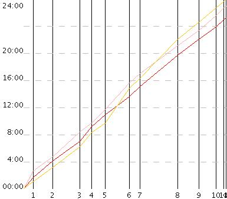
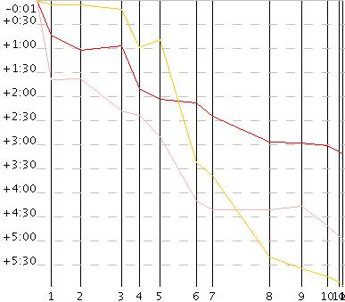

Программа предназначена для упрощения просмотра результатов соревнований, предоставленных в виде "сплитов"(OSV,SFR).
 
В первом режиме просмотра на графике отображены кривые для разных спортсменов, по горизантальной оси отложено расстояние(отмечены контрольные пункты), а по вертикальной оси - полное время, котрое учасник находился на дистанции. В идеале(если спортсмен бежит с постоянной скоростью) эта кривая должна быть прямой.
Во втором варианте просмотра по горизонтали так же отложено расстояние, а по вертикали - разница во времени с виртуальным участником, который на каждом перегоне имел второй результат.
В обоих видах просмотра возможно проссматривать неограниченное число спортсменов из групп с одинаковой дистанцией.
Есть возможность убрать из рассмотрения любой перегон, при этом пересчитывается полное время для каждого участника и составляется новый протокол. Таким образом можно узнать, какое место занимал бы участник, если бы на дистанции не было каких-то перегонов.
Программа будет работать на любом компьютере с установленным JRE5
Программа не требует установки. Для запуска программы необходимо установленное JRE5. В большинстве случаев достаточно запустить файл ConcreteSplitViewer.
После запуска программы на экране появляется окно, в котором есть две кнопки: "Открыть OSV файл","Открыть SFR файл", позволяющие открывать файлы форматов OSV и SFR соответственно. После нажатия на одну из этих кнопок, появляется диалог выбора файла. После выбора необходимого файла, в правой части окна программы появится список групп. Выбор группы в этом списке влечёт появления спортсменов этой группы в другом списке, который находится ниже списка групп. Выбор спортсменов из списка добавляет их на просмотр, и слева от списков появляются графики для выбранных спортсменов. Использование левой кнопки мышки на одном из перегонов(пространство между черными вертикальными линиями), убирает этот перегон из рассмотрения. Для восстановления рассмотрения всех перегонов, нужно нажать средней кнопкой или левой кнопкой, при зажатой клавише shift, на "поле" отображения графиков. В верхней части программы находится выпадающий список, с помощью которого производится выбор режима просмотра. При изменении режима просмотра сохроняются выбранные спортсмены и убранные перегоны.